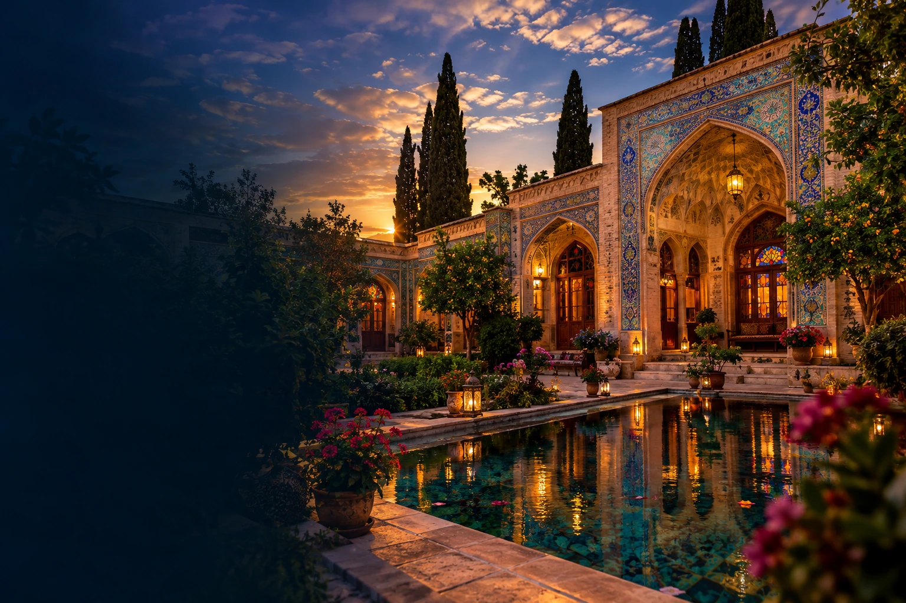
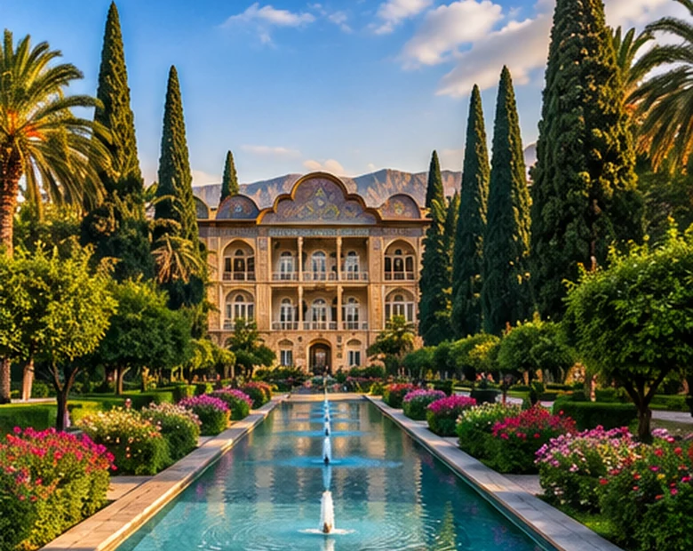
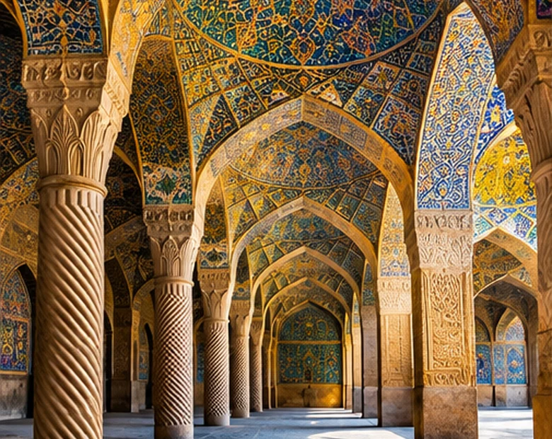
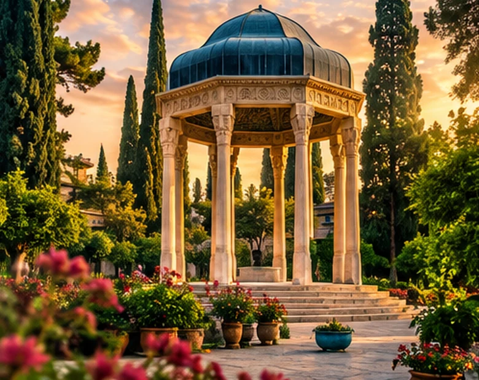
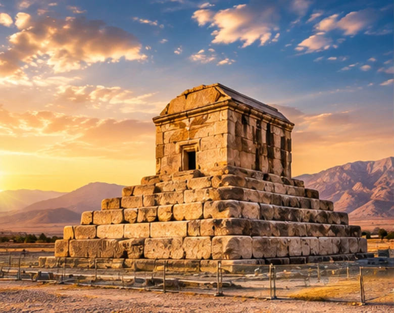
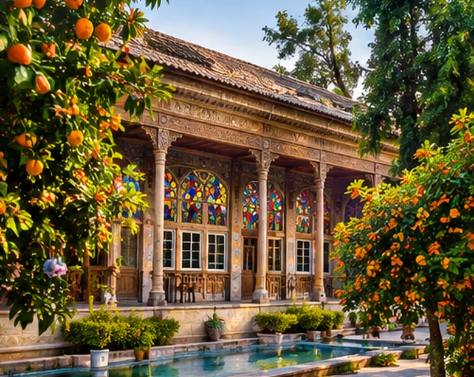

شیراز را
زندگی کن.
از بافت تاریخی و بازار وکیل تا باغهای سرسبز و ردّ شعر در شهر؛ یک نقطهی شروع خوشساخت برای اقامتی که فقط خوابیدن نیست.
جایی که اقامت،
شروع ماجراست.
این نسخه با یک اصل ساخته شده: هر بخش باید کار مشخصی انجام دهد. عکسها و آیکنها محلی هستند، کارتها تعامل واقعی دارند و قابلیتهای نمایشیِ بیاتصال جای خود را به ابزارهای ساده و قابل اعتماد دادهاند.


نقش و رنگ
شعر و آرامشStories
آبوهوای شیراز، برای برنامهریزی بهتر
پیشبینی چند روز آینده را ببینید و برای باغگردی، پیادهروی یا بازدید از آثار تاریخی آماده شوید.
نکتهی سفر: برای تخت جمشید و محوطههای روباز، ساعات خنکتر روز را انتخاب کنید؛ پیشبینی هوا ممکن است تغییر کند.
اقامتگاه را با نیاز سفرت هماهنگ کن
واحدها را براساس ظرفیت فیلتر کن، مورد علاقهات را ذخیره کن و برای رزرو به صفحهی اصلی همان واحد برو.
هر لوکیشن، دنیای خودش را دارد.
کارتها تم مستقل، نشان اختصاصی، تصویر پسزمینه و رنگ متناسب با حالوهوای مکان دارند. جستوجو کن، جزئیات را ببین یا مستقیم مسیر را باز کن.

برنامهی سفر را
خودت بچین.
از کارت هر جاذبه «افزودن به برنامه» را بزن. اینجا میتوانی ترتیب مسیر را ببینی، لیست را کپی کنی یا مسیر جستوجوی انتخابهایت را در Google Maps باز کنی.
رنگها و بافتهای شیراز
گالری بصری برای مرور تصاویر؛ روی هر تصویر کلیک کن تا بزرگ شود.
تصاویر این نسخه آثار بصری تولیدشده برای طراحی سایت هستند؛ برای معرفی دقیق فضای داخلی واحدها، عکسهای واقعی اقامتگاه را جایگزین تصاویر اتاق کنید.
برای اقامت،
مستقیم هماهنگ شو.
راه تماس را انتخاب کن. لینکها برای موبایل و دسکتاپ آمادهاند و نیازی به فرم نمایشی یا ارسال ساختگی نیست.
